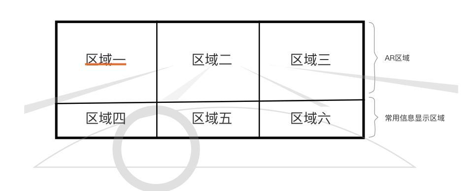
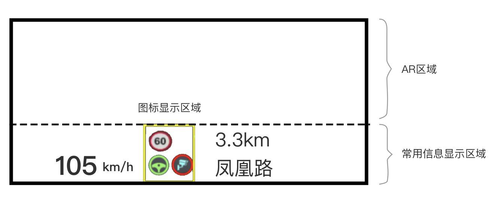
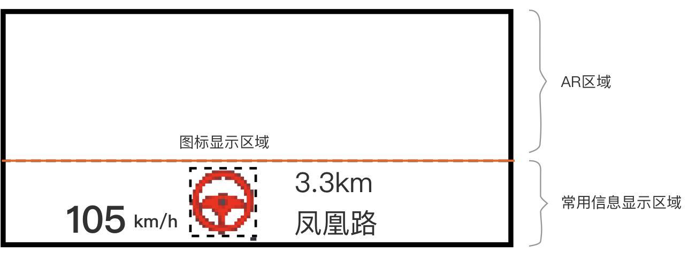
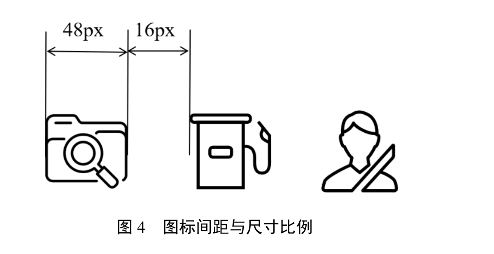
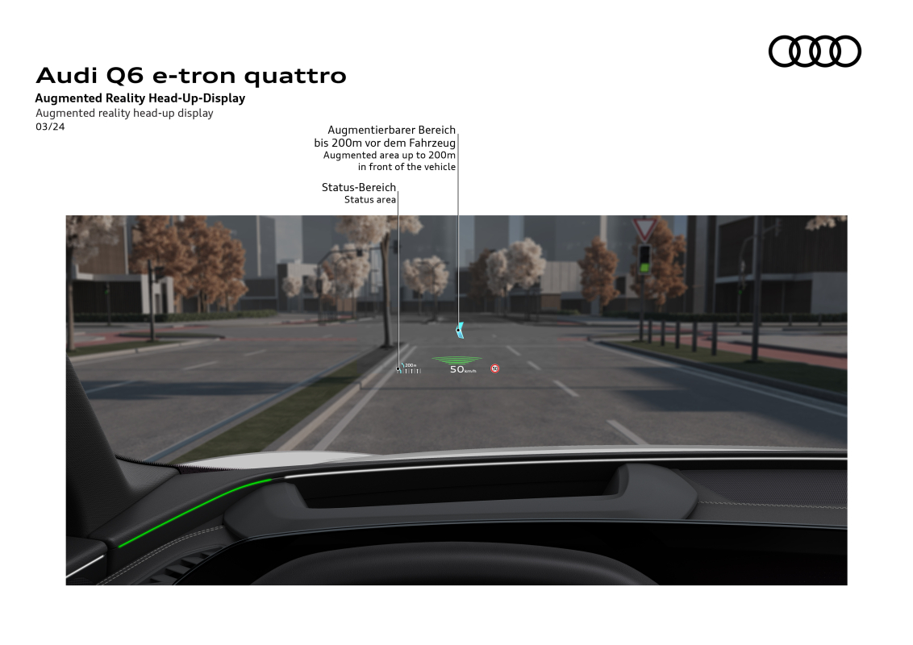

HUD标准先看适用范围
ISO/TS 21957给出HUD定义与测试框架；SAE J1757-2给出光学测量方法。本文仅核验公开范围，未取得付费全文，不作条款符合性声明。
面向公开资料研究、界面设计与目标硬件适配。示意采用官方文档原图与规范草案原图；项目建议单独标注。
没有符合条件的条目，请调整关键词或证据类型。
首先确认资料适用范围、版本和证据等级。
参照HarmonyOS官方指南将内容组织为设计基础、组件、交互、适配和参考资料。各组件采用“概述、规格、使用规则、异常处理”的说明方式。公开HiCar指南作为车机文档形式参考，不能等同于鸿蒙座舱内部HMI或HUD规范。DS01 DS02 DS03
本版8幅插图均来自车型官方手册、官方技术资料或国内HMI指南公开草案。保留原图，不叠加项目UI，不从截图反推字体、颜色或像素尺寸。正式标准与草案分开引用；没有图源的场景以验证清单说明。
ISO/TS 21957给出HUD定义与测试框架；SAE J1757-2给出光学测量方法。本文仅核验公开范围，未取得付费全文，不作条款符合性声明。
其范围排除了叠加外部视野的HUD。中控屏上的字号、对比度和可读性结论需要重新验证。
华为和小米均参与T/CAAMTB 301-2025起草，不能概括为没有规范资料。另未检索到两家公司各自完整公开的HUD字号／图标／组件Token系统；产品发布、联合标准、内部设计系统是不同层次的材料。
2023研究中HUD读取更快，但注视显示时对意外事件的反应并未优于对照。评审须加入行人、刹车灯与突发障碍识别。
已核验GB/T 46926-2025、SJ/T 11834-2022、T/CAAMTB 301-2025和T/ZQB 007-2025的正式登记与现行状态。正式全文尚未取得，本文不声称已核实最终条款中的数值；团体标准和推荐性国标不直接表述为普遍强制要求。
人机交互指南公开征求意见稿含字符、图标视角及颜色建议。正式版已发布，但本次取得的草案不自动等同正式版；所有草案数值在国内厂商章节单列。
| 条件 | 本项目假设 | 证据属性 |
|---|---|---|
| 驾驶位置 | 左舵乘用车 | 项目推荐 |
| 画布 | 1920 × 1080px | 项目推荐 |
| 水平FOV／视距 | 12°／10m | 项目推荐；可调 |
| 字体 | Noto Sans SC，四种打包字重 | 项目选择 |
| 初始边距／网格 | 96px／8px | 项目推荐；须硬件标定 |
按装机口径选取厂商，区分规格书、联合标准与完整设计系统。
逐项查找官网、技术发布、投资者文件、联合标准与下载入口。本次新增26项来源。已经找到共同参与的规范，仍未取得任何一家对外完整发布、可直接套用的1920×1080字号／图标／颜色组件Token系统。
采用盖世汽车研究院2026年1—7月、2026-09-10发布的可核验完整名单。两栏都是中国乘用车市场装机统计，HUD总榜包含多种显示类型；AR-HUD榜是本项目主样本。前装装机量不表示设计水平。总榜含电装、欧摩威等外资，不能把“中国市场前十”写成“国产厂商前十”；怡利按榜单原名保留。RK01
| 名次 | AR-HUD前十／本项目主样本 | HUD总榜前十／交叉核对 |
|---|---|---|
| 1 | 怡利电子188,694套 · 19.2% | 华阳多媒体748,503套 · 29.5% |
| 2 | 华阳多媒体166,946套 · 16.9% | 怡利电子255,212套 · 10.1% |
| 3 | 泽景电子132,225套 · 13.4% | 泽景电子248,973套 · 9.8% |
| 4 | 华为技术118,373套 · 12% | 水晶光电229,925套 · 9.1% |
| 5 | 未来黑科技111,132套 · 11.3% | 电装194,346套 · 7.7% |
| 6 | 水晶光电90,405套 · 9.2% | 未来黑科技169,877套 · 6.7% |
| 7 | 零跑汽车57,469套 · 5.8% | 弗迪精工147,277套 · 5.8% |
| 8 | 弗迪精工32,640套 · 3.3% | 欧摩威146,356套 · 5.8% |
| 9 | 浦创智能32,503套 · 3.3% | 华为技术118,373套 · 4.7% |
| 10 | 疆程技术25,955套 · 2.6% | 疆程技术64,789套 · 2.6% |
以下均为对应产品或年代的厂商公开信息。未公开、未取得、访问失败分别记录；不通过宣传图反推数值，也不把W-HUD数值移作AR-HUD规格。
| 厂商／AR装机口径 | 可追溯文件类型 | 参数与适用边界 | 联合规范 | UI规范检索结果 | 依据 |
|---|---|---|---|---|---|
| 怡利电子AR榜第1 · 188,694套 · 19.2% | 3D ARHUD官网、法说会PDF、EL-321D送审资料 | 历史EL-321D：FOV12°×4°／18°×5°，体积4.5L／8L。1—200m表述不直接当光学焦面；历史产品与当前量产分开。 | T/CAAMTB 301—2025起草单位署名为苏州怡利。 | 本次未找到完整公开UI字号／图标Token表。 | PV01 PV02 PV03 CN02 |
| 华阳多媒体AR榜第2 · 166,946套 · 16.9% | HUD产品中心、2026景深式AR-HUD技术说明、下载中心 | 2026景深式方案：虚像距离>10m；所引页面未给完整FOV／分辨率／眼盒。不能把旧C-HUD或第三方转引参数作为2026 AR产品规格。 | GB/T 46926—2025、T/CAAMTB 301—2025均有署名。 | 有多场景／自适应亮度方向说明；未发现完整公开像素规范。 | PV04 PV05 PV06 CN01 CN02 |
| 泽景电子AR榜第3 · 132,225套 · 13.4% | AR-HUD官网规格参数表 | FOV≥10°×3°；距离≥7m；下视角-1°～3°；图像≥50吋；约13L。DLP130万像素不等于固定输出1920×1080。 | GB/T 46926—2025起草单位。 | 公开数字化开发和主题定制说明；未找到通用字号表。 | PV07 CN01 |
| 华为技术AR榜第4 · 118,373套 · 12% | R7官方量产参数、技术愿景、相关车型手册 | R7历史方案13°×5°、7.5m、1920×730、12000nit、1200:1。这些数值只对应2022 R7发布，不代表新代际所有华为／引望产品。 | 团标署名华为；国标署名深圳引望，分别按原文件记录。 | 有公开产品参数与共同参与的标准；不能再概括为“没有规范资料”。 | H02 H03 M01 CN01 CN02 |
| 未来黑科技AR榜第5 · 111,132套 · 11.3% | 光学显示产品页、AR Kernel介绍、标准参与说明 | W-HUD公开6°×3°～10°×3°、2～4m、12000～20000nit、1500:1。光场AR独立参数待核。官网解析中AR表重复W-HUD数值，暂不作为独立AR参数。 | T/CAAMTB 301—2025首列起草单位；亦参与GB/T 46926。 | 有AR引擎技术介绍；未取得公开完整SDK或通用UI规范。 | PV08 PV09 CN01 CN02 |
| 水晶光电AR榜第6 · 90,405套 · 9.2% | 官网W-HUD／AR-HUD分类、联合标准登记 | 本次可核验页面以产品概述为主；未取得完整光学参数表。不以券商旧表替代当前厂商规格；详情页访问不稳定。 | T/CAAMTB 301—2025起草单位。 | 未找到独立完整UI设计规范；共同标准可作为进一步依据。 | PV10 CN02 |
| 零跑汽车AR榜第7 · 57,469套 · 5.8% | 港交所公司披露文件／自研AR-HUD段落 | 全新C11：60英寸；车速、AR、地图三模式。其余项目所引段落未公开。公司自研产品的等效英寸不转换为画布分辨率。 | 未确认本次四项正式标准中有独立零跑署名。 | 有产品与模式说明，未找到开放的供应商级UI规范。 | PV11 |
| 弗迪精工AR榜第8 · 32,640套 · 3.3% | 排名确认供应商身份；未检索到可核验官方HUD规格书 | FOV、VID、眼盒、像素、亮度：本次未取得公开官方数值。检索覆盖“弗迪精工 HUD 参数／规格书”及比亚迪官方域名；未找到不等于不存在。 | 国标有比亚迪汽车工业署名，不能自动改称弗迪精工独立标准。 | 未找到公开完整HUD界面规范。 | RK01 CN01 |
| 浦创智能AR榜第9 · 32,503套 · 3.3% | 排名确认覆盖对象；未找到可核验独立官网规格书 | 本次未取得可完整核验的官方SKU参数表。检索覆盖公司名＋官网／AR-HUD／规格书／白皮书，排除同名IC烧录企业。 | 未确认本次四项正式标准中有独立浦创署名。 | 媒体有功能介绍，但本表不把其数值升级为厂商正式规格。 | RK01 |
| 疆程技术AR榜第10 · 25,955套 · 2.6% | 官网AR-HUD产品页、TFT方案技术发布 | 图像>60英寸；距离>8m；眼盒140×50mm；DLP/TFT/LCoS。不同年份TFT发布和当前通用产品页不拼成同一个量产SKU。 | T/CAAMTB 301—2025起草单位。 | 有UI个性化与ADAS应用说明，未找到完整字号／颜色Token表。 | PV12 PV13 CN02 |
| 厂商 | 文件 | 参数与边界 | 纳入原因／标准 | UI资料 | 依据 |
|---|---|---|---|---|---|
| 电装补充样本／见说明 | 官方历史产品技术发布 | 2018 Lexus LS历史产品：约24英寸、约3m；本次未取得现款完整FOV／眼盒／像素表。历史产品说明，不将2017年的最大宣传表述延用至2026。 | 中国市场HUD总榜第5；外资供应商，不归为国产厂商。 | 说明位置、色彩、行人和车道提示；未找到公开完整1920字号表。 | PV17 |
| 欧摩威补充样本／见说明 | AUMOVIO／Epitone官方技术发布 | 公开无反射镜3D HUD技术路线；本次未取得完整量产SKU参数矩阵。保留榜单企业名称；技术展示不等同量产或统一规格。 | 中国市场HUD总榜第8；外资供应商，不归为国产厂商。 | 有光学技术方向，未找到开放完整UI Token规范。 | PV18 |
| 经纬恒润补充样本／见说明 | 官网AR-HUD产品页＋技术交流资料 | 产品页13°×4°、10m、92英寸、2K级；技术交流资料另有15000nit、1800:1。2K未给像素行列；13×5只对应另外方案说明。 | 补充技术样本，未混入本期前十排序。 | 有清楚的光学／算法及检测介绍；没有公开完整字号表。 | PV14 PV15 |
| 德赛西威补充样本／见说明 | 官网智能显示系统性能规格 | AR栏1440×480、≥1700:1、≥15000nit。W-HUD栏的≤1.5mrad、≥100PPD不迁移成AR-HUD规格。 | 参与GB/T 46926—2025。 | 有性能参数，未找到完整HUD界面Token规范。 | PV16 CN01 |
| 文件 | 状态／日期 | 本次核验深度 | 用于本项目 |
|---|---|---|---|
| GB/T 46926—2025轻型汽车视野辅助系统技术要求及试验方法CN01 | 现行推荐性国家标准2026-07-01实施 | 正式登记、状态与起草单位 | 作为国内系统技术要求与试验依据优先入口；未核验正式全文数值。 |
| SJ/T 11834—2022车用平视显示器光学性能测试方法CN06 | 现行推荐性电子行业标准2023-01-01实施 | 官方状态、发布与实施日期；企业说明交叉核对 | 光学测试方法依据；不等同字号、图标、颜色的UI设计系统。 |
| T/CAAMTB 301—2025汽车座舱电子信息抬头显示系统CN02 | 现行团体标准2025-09-01实施 | 正式登记、适用范围与完整起草名单 | 最直接连接华为、华阳、小米、未来黑科技、怡利、水晶、疆程的共同文件。 |
| T/ZQB 007—2025增强现实型抬头显示系统人机交互设计指南CN03 | 现行团体标准2025-10-01实施 | 正式目录；全文未取得 | 本项目最应优先取得的界面设计正式规范。 |
| 人机交互指南公开草案视觉设计、字号、图标、颜色、动态设计CN04 | 征求意见稿；不等同于正式版2025-02官网文件 | 全文读取，PDF第13—14页视觉核对 | 可研究具体建议及计算方法，不能写成正式版已经确认的硬性门槛。 |
| HUD标准需求研究报告供应商共同参与的系统规格与标准化研究CN05 | 2021历史研究报告2021-07-27正文日期 | 全文与参与单位、规格表 | 提供历史参数口径与测试项目，不当作2026行业最优值。 |
T/CAAMTB 301-2025的正式起草名单同时包含华为技术、小米汽车、未来黑科技、华阳、苏州怡利、水晶光电、疆程等。没有检索到独立品牌组件系统，不能推导为这些企业没有参与HUD规范。团标也不自动等同于各公司全部内部HMI规范。CN02
下表归纳CN04的视觉设计章节，标签为研究依据。CN03正式版已实施，但全文未取得，不能声称下列数值就是正式版最终条款。“最小参考”保留原文任务区分，不作为量产验收承诺。
| 主题 | 草案给出的参考 | 定位 | 应用边界 |
|---|---|---|---|
| 文本视角 | 20角分；最小参考16／12角分（按时间要求严格／不严格区分） | 5.2.5.2.2，正文第7页 | 时间要求严格的例子为接管倒计时；不是所有中文字号的统一最佳值。 |
| 图标视角 | 86角分；最小参考41／34角分（按任务时效区分） | 5.2.5.2.5，正文第8页 | 计算主图形可见高度，不能只用图标外框。 |
| 显示数量 | 主要图标1—3个，突出一个最关键元素组 | 5.2.6.2.4，正文第8页 | 不等于整幅HUD最多只能有三个图层。 |
| 颜色编码 | 尽量减少，建议不超过4种编码色 | 5.2.4.2.3，正文第7页 | 参考语义编码数量，不是网页总颜色或固定HEX色板。 |
固定本库水平FOV 12°、10m、平面像面中心近似。下表换算的是实际可见图形高度，不是字体em字号或图标外框。水平FOV或裁切区域改变后须重新计算。CN04
| 草案视角参考 | 角分 | 1920画布可见高度 | 10m像面物理高度 |
|---|---|---|---|
| 文本参考 | 20 | 53.1px | 58.2mm |
| 时效性文本最小参考 | 16 | 42.5px | 46.5mm |
| 非时效文本最小参考 | 12 | 31.9px | 34.9mm |
| 图标主图形参考 | 86 | 228.5px | 250.2mm |
| 时效性图标最小参考 | 41 | 108.9px | 119.3mm |
| 非时效图标最小参考 | 34 | 90.3px | 98.9mm |
可见像素高度 = W × tan(视角÷2) ÷ tan(水平FOV÷2)；物理高度 = 2D × tan(视角÷2)。两处视角均按度换算；角分需先÷60。
本库Noto Sans SC数字“88”的160px em对应约122.72px轮廓墨迹，在12°场景约46.2角分；96px“前方右转”对应约91.10px，约34.3角分。它们均大于草案20角分文本参考，需对照识读、道路遮挡与任务密度测试。图标草案86角分参考约229px；现有96／128／160px只是外框，不能凭外框就判定满足41／34角分的主图形最小参考。CN04
颜色方案中白／灰为中性层级，青／绿／琥珀／红为4类彩色任务编码；同时保留形状和文字。最终色度、亮度和报警策略以硬件与适用规则验证。ISO 15008仍按原适用边界排除HUD；草案引用该标准不改变ISO自身范围。T03 CN04
先阅读真实文档中的信息分区，再定义项目坐标。

中国汽车保修设备行业协会 · 2025-02公开征求意见稿／T/ZQB XXXX
PDF第12页／正文第6页／图1 · 查看来源 ↗ CN04
草案六分区示意，不等同正式版条款或1920画布坐标。
pypdf提取该页第1个嵌入图像；未重绘、叠加或改色。| 案例 | 可直接确认 | 不可直接确认 |
|---|---|---|
| 问界M9手册 | 居中车速、导航、辅助信息；手册自身引线 | 1920坐标、字号、物理亮度 |
| 理想i8手册 | 左侧导航、中央辅助与告警、右侧基础驾驶信息 | 其他车型通用布局、统一最佳字号 |
| HMI指南草案 | 两行三列、上方AR与下方常用信息区 | 正式版条款及固定像素坐标 |
| Audi Q6原图 | 固定状态区和道路关联AR内容 | 将200m关联范围当成光学VID |
下列三种坐标模板保留为独立的项目起点。没有把官方图片缩放描摹到这些坐标；图片原始比例与1920画布尺寸不同。
车速和限速在左下，下一动作在右下，中央道路保持疏朗。 以下坐标来自本项目，未与官方图片对应，不是厂商公开布局尺寸。
| 区域 | x | y | 宽 | 高 |
|---|---|---|---|---|
| 固定读数 | 96 | 704 | 576 | 280 |
| 导航指令 | 1056 | 704 | 768 | 280 |
| 道路关联 | 480 | 256 | 960 | 384 |
| 警告预留 | 480 | 96 | 960 | 144 |
中间是稳定主读数，两侧承载限速、辅助状态和简短导航。 以下坐标来自本项目，未与官方图片对应，不是厂商公开布局尺寸。
| 区域 | x | y | 宽 | 高 |
|---|---|---|---|---|
| 固定读数 | 720 | 704 | 480 | 280 |
| 两侧状态 | 96 | 744 | 544 | 240 |
| 导航指令 | 1280 | 744 | 544 | 240 |
| 道路关联 | 480 | 256 | 960 | 384 |
| 警告预留 | 480 | 96 | 960 | 144 |
下方固定信息带，中上方按需提供方向与目标关联。上下分区不等于实际多焦面。 以下坐标来自本项目，未与官方图片对应，不是厂商公开布局尺寸。
| 区域 | x | y | 宽 | 高 |
|---|---|---|---|---|
| 固定信息带 | 96 | 704 | 1728 | 280 |
| 道路关联 | 480 | 256 | 960 | 384 |
| 警告预留 | 480 | 96 | 960 | 144 |
1920×1080是本库的作者坐标系。默认水平12°、VID10m，垂直FOV按等比例平面投影计算约6.77°；不是某款量产HUD规格。
华为R7发布规格为13°×5°、1920×730。参考画布保持形状比例适配光学窗口，不把16:9界面纵向压扁，也不把730直接改写成720。
安全内容区为x96、y96、w1728、h888。该边距只服务原型排版，仍需在眼盒边缘、不同坐姿和风挡畸变后验证。
车速、限速与关键状态不随导航弹出重排。三种布局都预留固定信息区、道路关联区和警告区；区域为项目建议，不是行业统一尺寸。
道路关联区仅显示当前动作需要的箭头或目标角标；避免铺大块填充背景。图示黑色是非发光预览底色，不能在透明HUD上遮黑道路。
Audi Q4以近区状态和远区AR组织信息；VW ID.7也区分近区读数与远区导航。平面图中的上下位置不代表已经实现多焦面光学。
区分字号、字形可见高度、行高和驾驶员实际看到的视角。
| 用途 | 字号／字重 | 行高 | 属性 |
|---|---|---|---|
| 主车速 | 160px／700 | 192px | 项目推荐 |
| 导航主指令／重要警告 | 96px／600 | 120px | 项目推荐 |
| 道路名／辅助信息 | 72px／500 | 96px | 项目推荐 |
| 单位／非关键附属信息 | 56px／500 | 72px | 项目推荐 |
| 字样 | em字号 | 轮廓高度 | 轮廓／em |
|---|---|---|---|
| 88 | 160px | 122.72px | 0.767 |
| 前方右转 | 96px | 91.10px | 0.949 |
| 滨海大道 | 72px | 67.32px | 0.935 |
| km/h | 56px | 54.82px | 0.979 |
数字使用等宽排列。上述轮廓不包含抗锯齿、光学模糊或风挡畸变；不同字样须重新测量。160／96／72／56px没有被证明是所有HUD的最佳字号。国内草案的角分建议及换算见国内厂商与标准。
主车速160/700，主指令及重要警告96/600，辅助信息72/500，单位56/500。行高分别192、120、96、72px。56px只用于非关键内容。
字号描述字体em方框；数字大写高度、中文墨迹高度和行高都不同。以实际字形高度换算角分；网页可输入墨迹高度比例并显示假设。
NHTSA 2016通用DVI警告文本建议20角分作为最佳参考，最低值随任务时效变化；这些是通用DVI研究指导，不能直接作为中文AR-HUD最佳值。
使用Noto Sans SC 500/600/700与等宽数字；验证0/6/8/9和1/7。道路名保持单行，空间不足时缩短文案，不缩小关键字号或自动横向滚动。
使用有出处的规范示例；量产图标从目标车型批准的资源中替换。

中国汽车保修设备行业协会 · 2025-02公开征求意见稿／T/ZQB XXXX
PDF第14页／正文第8页／图2 · 查看来源 ↗ CN04
示意主要图标集中区；不把示例内图标提取为已认证的量产符号。
pypdf提取该页第1个嵌入图像；未重绘、叠加或改色。
中国汽车保修设备行业协会 · 2025-02公开征求意见稿／T/ZQB XXXX
PDF第15页／正文第9页／图3 · 查看来源 ↗ CN04
原图包含草案自身的虚线框；本项目没有追加标注或改写其内容。
pypdf提取该页第1个嵌入图像；未重绘、叠加或改色。
中国汽车保修设备行业协会 · 2025-02公开征求意见稿／T/ZQB XXXX
PDF第15页／正文第9页／图4 · 查看来源 ↗ CN04
48px／16px是草案比例示例，不是本项目HUD默认尺寸。
原PDF局部渲染：裁切框[170,351.9,480,511.9]pt；保留原有48px／16px标注与图题，未重绘或追加标注。草案里的符号保留在原图内，不拆分成“标准认证图标”。组件库中的图标采用可替换槽位；不再提供本项目自行绘制的14个图标。96／128／160px外框及6／8／10px笔画仍是待验证的工程建议。
状态96px／6px，导航128px／8px，警告160px／10px。默认几何比例一致；视角不足时整体升级尺寸，不能只加粗。
NHTSA对警告图标的主图形视角另有建议：最优86角分，最低随任务为41或34角分。本库96／128／160px不是已经满足这些研究目标的保证。
本库图标是原创设计示意，不宣称替代ISO 2575、GB 4094或各市场法定符号。正式项目按目标市场核验符号、颜色与必须保留的仪表提示。
重要警告同时给出可辨符号和短指令。目标使用开角框避免覆盖对象，不能以显示了框代表系统已识别全部目标。
以下16个组件族保留尺寸、状态、文案和出现／退出条件，图形外观由目标项目批准后绑定。
用于呈现车速相关信息。图形资产需由目标车型批准，本文不提供自行绘制的车载符号。
400 × 248px状态：常态／超速／不可用用于呈现挡位相关信息。图形资产需由目标车型批准，本文不提供自行绘制的车载符号。
144 × 120px状态：常态／不可用用于呈现限速相关信息。图形资产需由目标车型批准，本文不提供自行绘制的车载符号。
160 × 160px状态：常态／超速／不可用用于呈现巡航设定速度相关信息。图形资产需由目标车型批准，本文不提供自行绘制的车载符号。
320 × 144px状态：待命／激活／不可用用于呈现转向提示相关信息。图形资产需由目标车型批准，本文不提供自行绘制的车载符号。
128 × 128px状态：左转／右转／不可用用于呈现导航动作相关信息。图形资产需由目标车型批准，本文不提供自行绘制的车载符号。
640 × 160px状态：预告／执行／不可用用于呈现导航距离相关信息。图形资产需由目标车型批准，本文不提供自行绘制的车载符号。
400 × 144px状态：预告／临近／不可用用于呈现道路名相关信息。图形资产需由目标车型批准，本文不提供自行绘制的车载符号。
640 × 128px状态：常态／不可用用于呈现车道引导相关信息。图形资产需由目标车型批准，本文不提供自行绘制的车载符号。
480 × 200px状态：预告／执行／不可用用于呈现AR箭头相关信息。图形资产需由目标车型批准，本文不提供自行绘制的车载符号。
384 × 320px状态：预告／执行／不可用用于呈现辅助驾驶状态相关信息。图形资产需由目标车型批准，本文不提供自行绘制的车载符号。
480 × 144px状态：关闭／待命／激活／注意／故障用于呈现跟车距离相关信息。图形资产需由目标车型批准，本文不提供自行绘制的车载符号。
320 × 160px状态：常态／注意／不可用用于呈现目标标记相关信息。图形资产需由目标车型批准，本文不提供自行绘制的车载符号。
240 × 240px状态：常态／注意／危险用于呈现警告条相关信息。图形资产需由目标车型批准，本文不提供自行绘制的车载符号。
960 × 160px状态：信息／注意／危险用于呈现接管提示相关信息。图形资产需由目标车型批准，本文不提供自行绘制的车载符号。
960 × 200px状态：注意／危险用于呈现系统状态相关信息。图形资产需由目标车型批准，本文不提供自行绘制的车载符号。
800 × 144px状态：常态／降级／故障语义颜色同时搭配形状与文字，物理显示效果由目标光学系统标定。
白／灰用于中性层级，青／绿／琥珀／红用于四类彩色任务编码。HEX只描述设计值，不描述HUD物理亮度。HarmonyOS的vp／fp、移动端色板与HiCar控件规格不直接移植为HUD参数。
白色常态、青色导航、绿色激活、琥珀色注意、红色危险。高优先级状态不随主题换色；同一颜色不同时代表导航与危险。
HEX只用于设计与软件参考；实际色度、白点、发光亮度、日夜适应与光学透过率由HUD硬件标定。网页夜景切换仅换背景，不把CSS效果当nit。
用颜色＋形状＋文字共同编码，提供灰度检查。关键状态不用低透明度区分，夜间通过系统调光保持结构清楚。
问界M9手册说明亮度滑杆是自动亮度的偏移偏好，会根据环境调节；偏光眼镜可能影响清晰度。
用状态和退出条件定义行为，不用自制效果图证明实车效果。
| 级别 | 任务 | 项目处理建议 |
|---|---|---|
| P0 | 危险 | 保留可信车速，压制无关AR信息 |
| P1 | 注意 | 一条主提示，短指令 |
| P2 | 当前驾驶动作 | 导航、限速及当下任务 |
| P3 | 常态附属 | 稳定呈现次要状态 |

理想汽车 · i8 2026 Max／2026-08-05文档目录
地图显示模式／W02-UI-083 · 查看来源 ↗ RF01
这是车机内HUD设置页面，不是夜间HUD亮度实测图。
既有WebP副本无损转存PNG；未重绘、叠加或改色。| 场景 | 应验证的行为 | 图示状态 |
|---|---|---|
| 巡航 | 稳定车速与辅助驾驶状态 | 以目标车型录屏／实车采集验证；本版未制作效果图 |
| 路口 | 导航动作时机与路口关联 | 以目标车型录屏／实车采集验证；本版未制作效果图 |
| 高速 | 远距指引与车道变化 | 以目标车型录屏／实车采集验证；本版未制作效果图 |
| 风险提醒 | 危险信息优先、道路目标可检测 | 以目标车型录屏／实车采集验证；本版未制作效果图 |
| 夜间 | 夜间调光、重影与眩光 | 以目标车型录屏／实车采集验证；本版未制作效果图 |
| 系统降级 | 注册异常或数据无效后退出空间关联 | 以目标车型录屏／实车采集验证；本版未制作效果图 |
P0危险保留车速并压制非必要AR；P1注意显示单条短提示；P2当前导航动作；P3常态。P0不被常态卡片替换。
以车辆速度、路口拓扑、定位与路线状态联合触发。示例不内置通用的固定触发距离；动作完成后退出AR，基础读数保持位置。
感知、定位、标定或时延异常时，不保持假贴合箭头与目标框；降级为固定二维方向＋短说明，保留可信车速。数据无效显示“—”，不留旧数值。
普通状态变化可用150–250ms淡入淡出作为原型起点；危险提示不等待装饰过渡。闪烁频率与报警时序由功能安全及人因验证决定，本库不设通用闪烁规范。
问界手册将部分AR箭头主题切换限制在P挡；YU7卡片组合含车型和OTA限制。自定义入口不能使驾驶中关键读数失去连续性。
通过光学条件换算可见尺寸；公式输出不改变官方原图。
0.949对应本库96px／600字重“前方右转”的轮廓比例，不是所有字形的常数。计算只输出数值，不修改官方图片。
按HUD测试框架明确坐标、代表眼点和观看条件，再测量几何及光学表现。项目输入应包括眼盒、俯视角、风挡、坐姿与可调范围。
平面近似下，物理像高H=2D·tan(FOVv/2)；墨迹物理高度h=H·p/Rh；中心视角θ=2·atan(h/(2D))。离轴、倾斜像面、畸变与多焦面需要实测映射。
13°×5°按平面几何得到约2.609:1窗口；映射到1920宽坐标时高约736px。此值是适配计算，不替代华为公布的1920×730硬件规格。
TI白皮书讨论长VID对调焦和视差的影响。贴路注册仍依赖眼点、标定、定位和时延；单凭大英寸或长距离不能判断整体体验。
本交付验证了数据、页面和生成逻辑；不宣称实车通过。需在日照、夜间、复杂标线、雨雪、偏光镜和眼盒边缘执行识读与道路检测任务。
| 环境／任务 | 测试条件 | 观察与记录 |
|---|---|---|
| 直射日光／逆光 | 白色道路、天空、反光车身 | 读数、符号及真实行人识别；记录亮度与环境照度 |
| 夜间／隧道出入口 | 黑暗、路灯、明暗突变 | 眩光、重影、调光过渡；保留各语义的可辨性 |
| 眼盒与坐姿 | 眼盒中心与边缘、座椅高低、头部运动 | 内容裁切、像差、视差和AR注册漂移 |
| 雨雪／复杂背景 | 积雪、密集标线、树影、雨滴 | 白色与警示色识别；检查目标遮挡和注意捕获 |
| 偏光眼镜／色觉差异 | 多种镜片角度、灰度与色觉模拟 | 不只依赖颜色识别状态，记录亮度损失 |
| 动态注册／异常注入 | 弯道、坡道、颠簸、延迟、定位与目标丢失 | 注册异常后正确降级；不得保留过时的空间关联 |
| 中文与不同年龄 | 生僻地名、长道路名、易混数字、不同年龄驾驶员 | 实测误读率、识读时间和道路目标检测表现 |
| 冲突与优先级 | 导航、转向、警告同时发生 | 危险优先、车速位置稳定、动作结束后恢复可预测 |
阈值、样本和测试任务由目标项目定义；分别记录识读表现与道路目标检测表现。
车型版本、光学参数与原图的来源分别记录。
| 品牌／版本 | 形态 | FOV | 显示距离 | 等效尺寸 | 分辨率 | 布局与调整 | 依据 |
|---|---|---|---|---|---|---|---|
| 华为／飞凡R72022发布方案 | 道路 AR-HUD | 13° × 5° | 7.5m | 约70英寸¹ | 1920 × 730 | 下方固定仪表，上方多车道AR本文所核验发布页未完整列出H01为2021方案；不将旧参数套到问界新款。 | H01 H02 |
| 鸿蒙智行／问界M92026增程版手册 | AR-HUD | 未公开² | 未公开² | 未公开² | 未公开² | 经典／简洁模式，AR及影像按需叠加高度、自动高度、亮度偏好、AR、雪地模式亮度滑杆是自动亮度偏移量，不是实际nit。 | M01 |
| 小米／SU7官网配置表所示车型 | 风挡HUD；不据名称推断贴路AR | 未公开² | 未公开² | 56英寸 | 未公开² | 显示驾驶与导航信息；多屏协同本次核验页面未完整列出不从初代配置表推导新一代所有车型均支持同一功能。 | X01 X03 |
| 小米／YU7当前产品页 | 风挡下黑区全景显示 | 未公开² | 未公开² | 1.1m横向宽度 | 未公开²；标称108PPD | 主驾核心＋横向可组合卡片五类卡片自由组合；部分功能需OTA宽度与HUD等效对角线不能直接比较；1200nit是该产品标称。 | X02 |
| 奔驰／S-Class W2232020技术发布＋24-1画册 | 道路 AR-HUD | 10° × 5° | 约10m | 约77英寸 | 未公开²；DMD约130万微镜 | 导航、辅助驾驶与真实道路融合所引资料未完整列出不是2026改款硬件参数。 | E01 E02 |
| Audi／Q4 e-tron2021技术说明 | 状态区＋AR区 | 未公开² | 状态约3m／AR约10m³ | AR约70英寸 | 未公开² | 近区静态状态，远区动态导航和辅助光学部件可电动调节，UI菜单未详列功能的情境距离与光学焦点分开。 | E03 |
| Audi／Q6 e-tron2024正文／NZ归档 | 倾斜像面 AR-HUD | 未公开² | 未公开²；宣称最远200m悬浮感 | 约88英寸 | 未公开² | 车速、交通标志、辅助及导航符号所引新闻稿未完整列出200m属于主观空间呈现说明，非本文认可的光学VID。 | E04 |
| Volkswagen／ID.72023欧洲上市资料 | 近区状态＋远区AR | 未公开² | 车辆前方3.5m／约10m³ | 本稿未公开² | 未公开² | 近区车速与限速，远区导航所引章节未完整列出显示距离的原点保留原文口径。 | E06 |
| BMW／Panoramic iDriveCES 2025技术方案 | 全景显示＋独立3D HUD | 未公开² | 未公开² | A柱至A柱；不补算英寸 | 未公开² | 驾驶员前核心＋中右自定义；上方独立HUD中右内容可个性化两种光学显示分开归类，不合成一个AR画布。 | E07 E08 |
未公开仅表示所引资料未公开。英寸、FOV、横向宽度、视距和像素不能互相替代；Q6原图不与Q4参数拼接为一个方案。

鸿蒙智行 · 问界M9 2026款增程版使用说明书／2026-09-30目录版
文档标页28／抬头显示配图 · 查看来源 ↗ M01
图中信息为手册示意；不能据图测量字号、像素或真实光学亮度。
从PDF提取原嵌入JPEG；未重绘、叠加或改色。
理想汽车 · i8 2026 Max／2026-08-05文档目录
抬头显示装置界面总览／界面显示／W04-UI-173 · 查看来源 ↗ RF01
编号与布局来自原手册；不代表其他理想车型或统一HUD布局。
既有WebP副本无损转存PNG；未重绘、叠加或改色。
Audi Technology Portal · 原图标注03/24／Q6 e-tron
原图03_AR_HUD_Cockpit／保留品牌与原始注释 · 查看来源 ↗ RF02
情境关联最远200m不是光学虚像距离。2026-11-07原图URL访问超时，使用2026-11-03已留存官网副本。
既有官网JPEG副本转存PNG；全图保留，未重绘、叠加或改色。每幅图、每个来源都保留发布方、版本、定位及检索日期。
| 图片 | 发布方与定位 | 处理方式 |
|---|---|---|
| F01 · 问界M9：车速与导航的官方示意 | 鸿蒙智行问界M9 2026款增程版使用说明书／2026-09-30目录版／文档标页28／抬头显示配图 | 从PDF提取原嵌入JPEG；未重绘、叠加或改色。 |
| F02 · 理想i8：左侧、中央、右侧三分区 | 理想汽车i8 2026 Max／2026-08-05文档目录／抬头显示装置界面总览／界面显示／W04-UI-173 | 既有WebP副本无损转存PNG；未重绘、叠加或改色。 |
| F03 · 理想i8：地图信息及雪地模式设置 | 理想汽车i8 2026 Max／2026-08-05文档目录／地图显示模式／W02-UI-083 | 既有WebP副本无损转存PNG；未重绘、叠加或改色。 |
| F04 · AR-HUD信息布局位置图 | 中国汽车保修设备行业协会2025-02公开征求意见稿／T/ZQB XXXX／PDF第12页／正文第6页／图1 | pypdf提取该页第1个嵌入图像；未重绘、叠加或改色。 |
| F05 · 图标显示区域的数量示意 | 中国汽车保修设备行业协会2025-02公开征求意见稿／T/ZQB XXXX／PDF第14页／正文第8页／图2 | pypdf提取该页第1个嵌入图像；未重绘、叠加或改色。 |
| F06 · 突出一个关键元素组 | 中国汽车保修设备行业协会2025-02公开征求意见稿／T/ZQB XXXX／PDF第15页／正文第9页／图3 | pypdf提取该页第1个嵌入图像；未重绘、叠加或改色。 |
| F07 · 图标间距与尺寸比例 | 中国汽车保修设备行业协会2025-02公开征求意见稿／T/ZQB XXXX／PDF第15页／正文第9页／图4 | 原PDF局部渲染：裁切框[170,351.9,480,511.9]pt；保留原有48px／16px标注与图题，未重绘或追加标注。 |
| F08 · Audi Q6 e-tron：状态区与AR区域 | Audi Technology Portal原图标注03/24／Q6 e-tron／原图03_AR_HUD_Cockpit／保留品牌与原始注释 | 既有官网JPEG副本转存PNG；全图保留，未重绘、叠加或改色。 |
H01Huawei · 2021-09
13°×5°、7.5m、约70英寸；底部仪表与贴路导航的产品表达。历史产品发布，不是UI设计规范。
定位：正文 · 核验：2026-11-07H02华为 · 2022-05-19
明确标注13°×5°、7.5m和1920×730。仅对应这次发布；宣传中的领先性表述不沿用为当前结论。
定位：正文 · 核验：2026-11-07H03M01鸿蒙智行 · 2026-09-30目录版
经典／简洁模式、高度、自动亮度、AR增强、雪地增强和辅助信息。手册的功能开关不构成跨车型通用规则。
定位：文档标页28–30 · 核验：2026-11-07X01小米汽车 · 动态页面／保留页面车型口径
公开56英寸HUD配置；FOV和有效像素未在本页公开。页面版本与当前新一代SU7不混用。
定位：舒适性／科技舒享套装 · 核验：2026-11-07X02小米汽车 · 动态页面，检索2026-11-07
三块Mini LED向风挡下黑区反射，1.1m全景显示，五类信息卡片。属于全景条带对照，不作为贴路AR参数。
定位：小米天际屏全景显示 · 核验：2026-11-07X03E01Mercedes-Benz USA · 2020-07／W223历史发布
AR-HUD：10°水平×5°垂直、约10m虚像、约77英寸。1.3百万DMD微镜不是1920×1080输出规格。
定位：The major innovations in detail · 核验：2026-11-07E02Mercedes-Benz · 24-1版本
AR-HUD与OLED中控、3D仪表的系统组成；功能随市场与配置变化。
定位：Digital cockpit／PDF第7页 · 核验：2026-11-07E03Audi · 2021-04-14／截至2026历史车型条目
远处AR约10m、70英寸；近处状态区域约3m。情境中更远的视觉定位不等于新的光学焦面。
定位：正文 · 核验：2026-11-07E04Audi New Zealand · 正文2024-03-19／2025目录归档
约88英寸的AR视野；倾斜像面造成最远200m的悬浮感，不能把200m直接写成光学VID。
定位：PDF第4页 · 核验：2026-11-07E05Volkswagen · 2020-12／ID.3、ID.4技术发布
动态AR区域约10m，约1.8m对角线；状态窗与AR窗口分工。
定位：正文 · 核验：2026-11-07E06Volkswagen · Autumn 2023／欧洲上市版
状态显示近区3.5m，导航与旅程信息远区约10m。数值原点按原文是车辆前方，不与眼点VID不加说明地混算。
定位：PDF第8页 · 核验：2026-11-07E07BMW Group · 2025-01-07／CES技术发布
Panoramic Vision投在风挡下黑区；独立3D HUD提供导航和辅助驾驶，两者分开。
定位：正文 · 核验：2026-11-07E08BMW Group · 2025演示资料
驾驶员视线中关键信息与上下显示层的分工；不是开放的组件规范。
定位：Driver’s line of sight · 核验：2026-11-07T01ISO · 2023-07／公开摘要
HUD参考点、眼点范围、图像几何、光学属性、静动态测试框架。未取得付费全文，本文不声称满足全部条款。
定位：正文 · 核验：2026-11-07T02SAE International · 2018-11-06／公开Scope
汽车HUD光学测量方法，范围并非制定汽车合规阈值；不用于背书本文像素值。
定位：正文 · 核验：2026-11-07T03N01NHTSA／Battelle · 2016-12／DOT HS 812 360
通用DVI警告文本研究建议20角分最佳参考，最低值随时效要求变化。图标主图形有独立视角建议；不能把它直接视为AR-HUD中文最佳字号。
定位：Selecting Character Height for Icons and Text · 核验：2026-11-07N02NHTSA／VTTI · 2023-01／DOT HS 813 293
48名参与者；更快读取HUD不代表注视HUD时对突发事件反应更快。支持联合评估道路目标检测。
定位：正文 · 核验：2026-11-07T04Texas Instruments · DLPA117A／2021-02修订
解释调焦与视差为何影响AR体验。供应商技术白皮书，不是整车统一验收标准。
定位：正文 · 核验：2026-11-07RK01盖世汽车研究院 · 2026-09-10发布／2026年1—7月统计
本次排名依据：中国市场乘用车前装HUD与AR-HUD两张独立榜单。不是大陆总部企业筛选榜，也不是技术水平或营收排名。
定位：HUD及AR-HUD供应商装机量排行榜 · 核验：2026-11-07CN01全国标准信息公共服务平台 · 2025-12-31发布／2026-07-01实施／现行推荐性国标
已核验状态与起草单位，含引望、泽景、华阳、未来黑科技、德赛西威等。未取得正式全文，不从征求意见稿推定最终阈值。
定位：基础信息、起草单位 · 核验：2026-11-07CN02国家标准馆／中国汽车工业协会 · 2025-08-26发布／2025-09-01实施／现行团标
登记起草单位包含未来黑科技、华为、华阳、小米、苏州怡利、水晶光电、疆程等；涵盖技术要求和试验方法。公开PDF链接本次取回失败，目录和署名已核实。
定位：适用范围、研制信息 · 核验：2026-11-07CN03国家标准馆／中国汽车保修设备行业协会 · 2025-06-20发布／2025-10-01实施／现行团标
比一般HUD产品宣传更接近本项目的界面规范需求。已核验正式版目录；没有取得正式全文，不把公开草案条款当作最终条款。
定位：基础信息 · 核验：2026-11-07CN04中国汽车保修设备行业协会 · 2025-02公开文件／编号仍为T/ZQB XXXX
已下载并视觉核对视觉设计章节；正文给出字符／图标视角、颜色、布局、数量等建议。本稿与CN03正式版分开引用。
定位：PDF第13—15页／正文第7—9页，5.2.4—5.2.6 · 核验：2026-11-07CN05汽标委智能网联汽车分标委／HUD标准需求项目组 · 正文日期2021-07-27／官网2022目录归档
华阳、泽景、未来黑科技、华为等参与。包含C/W/AR三类规格与光学、人机界面框架，是历史需求研究，不能当现行国家标准。
定位：正文第7—13页／PDF第10—16页 · 核验：2026-11-07CN06全国标准信息公共服务平台 · 2022-10-20发布／2023-01-01实施／现行推荐性行业标准
国内光学测试方法入口。官方核验状态与日期；本次未取得正式全文，不能把方法标准当统一字号或亮度阈值表。
定位：基础信息、标准状态 · 核验：2026-11-07PV01怡利电子 · 官网动态页，核验2026-11-07
说明亮度自适应、眩光控制、ADAS信息及定制化服务；没有公开完整1920×1080字号／图标Token表。
定位：正文 · 核验：2026-11-07PV02PV03台湾精品／怡利送审产品资料 · 2022 Taiwan Excellence Award条目
列出4.5L／12×4与8L／18×5方案；1—200m为送审材料表述，未给完整焦面测量定义，不直接当光学VID。
定位：正文 · 核验：2026-11-07PV04PV05华阳集团 · 2026-05-27
景深式AR-HUD采用连续焦面倾斜投射方案，公布虚像成像距离超过10m；其余项目未补算。
定位：正文 · 核验：2026-11-07PV06PV07泽景电子 · 官网动态页，核验2026-11-07
明确FOV≥10°×3°、图像距离≥7m、下视角-1°至3°、图像≥50吋、体积约13L；DLP5530约130万显示像素不等于1920×1080。
定位：规格参数 · 核验：2026-11-07PV08FUTURUS未来黑科技 · 官网动态页，核验2026-11-07
W-HUD栏给出FOV6°×3°至10°×3°、VID2—4m、亮度12000—20000nits、对比度1500:1。解析结果中AR栏重复同一表，未独立核实，不能混用为光场AR规格。
定位：W-HUD系列产品；AR栏需另核 · 核验：2026-11-07PV09FUTURUS未来黑科技 · 官网动态页，核验2026-11-07
确认参与T/CAAMTB 301—2025及AR Kernel路线；宣传中的领先性与精度描述不作为量化验收值。
定位：正文 · 核验：2026-11-07PV10水晶光电 · 官网动态页，核验2026-11-07
可核验W-HUD与AR-HUD产品分类和用途。详情页取回不稳定，本次未取得可完整核验的像素／FOV表。
定位：正文 · 核验：2026-11-07PV11零跑汽车／港交所披露 · 2025-08-18发布
确认全新C11的60英寸自研AR-HUD和车速／AR／地图三模式；没有在所引段落公开FOV、眼盒和像素尺寸。
定位：AR-HUD业务与产品段落 · 核验：2026-11-07PV12疆程技术 · 官网动态页，核验2026-11-07
公布图像>60英寸、投射距离>8m、眼盒140mm(H)×50mm(V)，PGU支持DLP/TFT/LCoS。
定位：正文 · 核验：2026-11-07PV13PV14经纬恒润 · 官网英文产品页，核验2026-11-07
13°×4°、10m VID、92英寸、2K级像素；2K不补写为1920×1080。
定位：Functions & Features · 核验：2026-11-07PV15经纬恒润 · 2024技术资料／历史发布
另公布1800:1、15000nit及按场景提供13°×4°／13°×5°，保持与具体方案绑定。
定位：AR HUD · 核验：2026-11-07PV16德赛西威 · 官网动态页，核验2026-11-07
AR-HUD栏：1440×480、对比度≥1700:1、亮度≥15000nit；W-HUD栏的双目视差和PPD不跨栏迁移。
定位：AR-HUD／性能规格 · 核验：2026-11-07PV17电装欧洲 · 2017-11-14／2018 Lexus LS历史产品
约24英寸、驾驶员前方约3m；可显示车速、限速、行人及车道引导。只作历史样本，不沿用当年的最大宣传结论。
定位：正文 · 核验：2026-11-07PV18欧摩威 AUMOVIO · 2025-09-04／IAA技术展示
公开无反射镜3D HUD技术路线；本次不把展会演示当作所有量产SKU的定量规格。
定位：正文 · 核验：2026-11-07PV19麦克赛尔数字映像 · 2023-01-13／起草参与企业说明
企业确认参与SJ/T 11834-2022，并说明覆盖视场角、亮度、畸变、白平衡误差等测试；正式标准元数据另见CN06。
定位：正文 · 核验：2026-11-07DS01华为开发者联盟 · 动态官方文档／2026-11-07核验
仅作为本手册的内容分类与文档编排参考；不将手机字号或触控尺寸作为HUD阈值。
定位：熟悉设计指南 · 核验：2026-11-07DS02华为开发者联盟 · 动态官方文档／2026-11-07核验
用于区分vp／fp与硬件像素，并参考适配章节组织；HUD依旧使用FOV、可见字形与目标光学映射。
定位：虚拟像素、字体像素、网格、断点与栅格 · 核验：2026-11-07DS03华为开发者联盟 · 动态官方文档／2026-11-07核验
公开HiCar文档包含模式与分屏说明。这是车机应用指南，不能称为完整鸿蒙座舱内部HMI或AR-HUD参数规范。
定位：正文 · 核验：2026-11-07RF01理想汽车 · 动态官方文档／2026-11-07核验
官方手册原图用于说明三分区、模式和设置；图像不作为像素测量或全品牌规范。
定位：2026-08-05目录／界面显示、地图显示模式 · 核验：2026-11-07RF02Audi Technology Portal · 动态官方文档／2026-11-07核验
引用2024官方原图，完整保留原图标识和注释。当前页面访问超时，采用2026-11-03已留存官网副本，不与Q4参数混用。
定位：03/24／03_AR_HUD_Cockpit原图 · 核验：2026-11-07